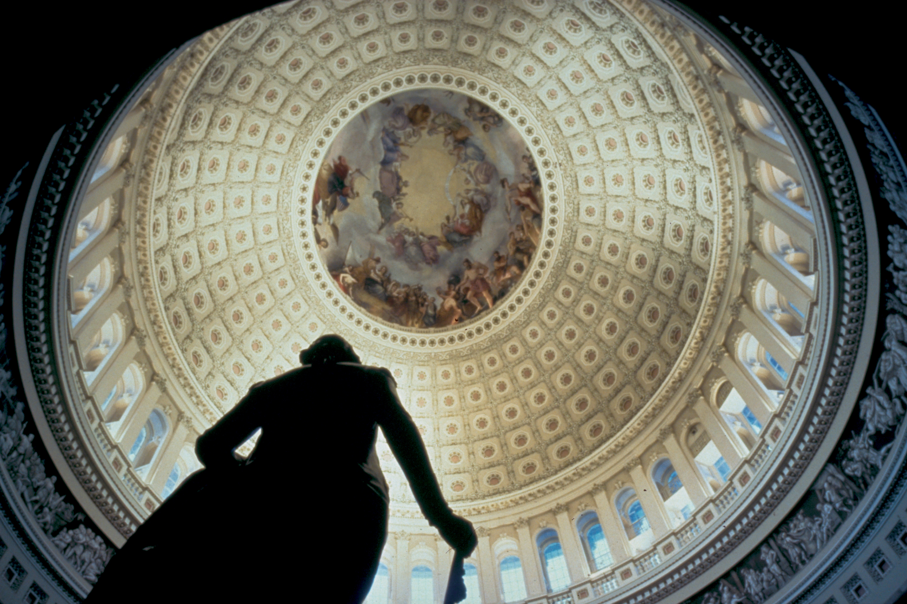
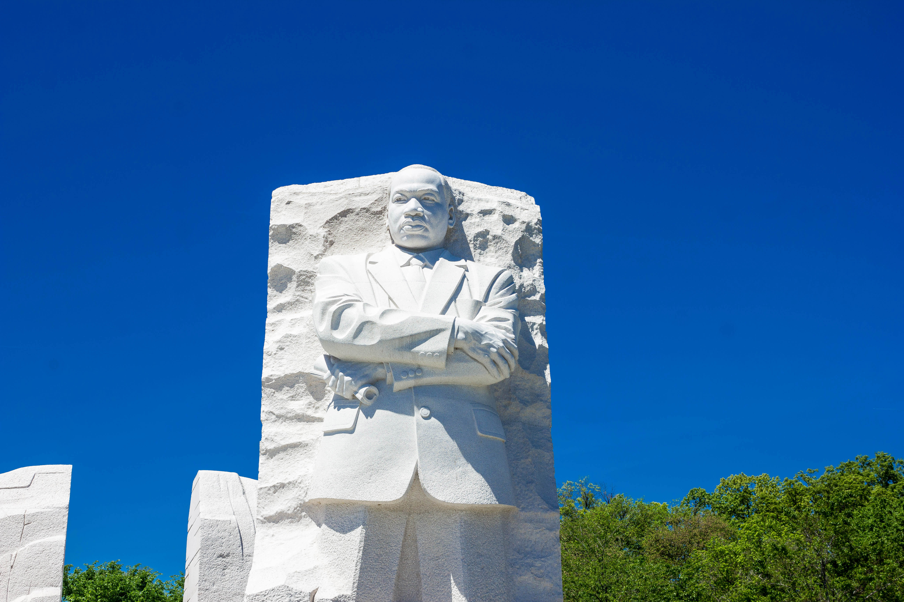
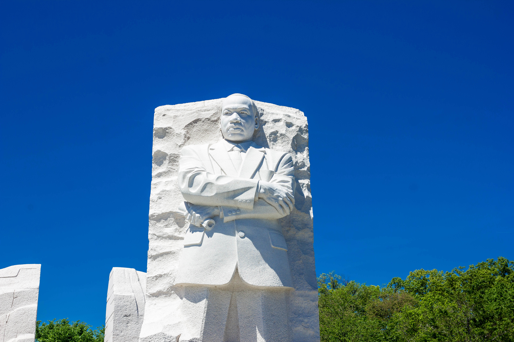
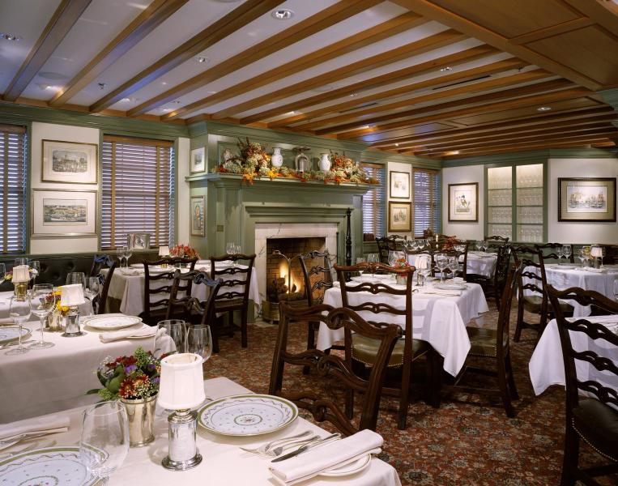

Washington, D.C. Tour
Hi! I’m Thomas, and I’ll be your tour guide as we travel around Washington, D.C.
There is so much to see and do in Washington, but we’ll spend the day visiting four sites in particular.
We’re going to look at some sites on the Mall, and work our way to dinner in Georgetown.

First, we’ll visit the Capitol Building, home to the US Congress.
Did you know that the Supreme Court used to hold session in this building as well?
 We’ll work our way west toward the Washington Monument where we’ll stop by the National Archives Museum to see the original copy of the Bill of Rights.

Next, we’ll head towards the Lincoln Memorial and check out the Martin Luther King Jr. Memorial.
We’ll work our way west toward the Washington Monument where we’ll stop by the National Archives Museum to see the original copy of the Bill of Rights.

Next, we’ll head towards the Lincoln Memorial and check out the Martin Luther King Jr. Memorial.
Just a few steps away from this memorial is where Martin Luther King Jr. delivered his famous “I Have a Dream” speech.

By now, we’ll be pretty tired of walking, and we’ll want to catch a cab up the Potomac to Georgetown where we’ll have dinner at 1789 restaurant, named for the year in which the US Constitution went into effect.
Join me for a great time in historic Washington D.C.